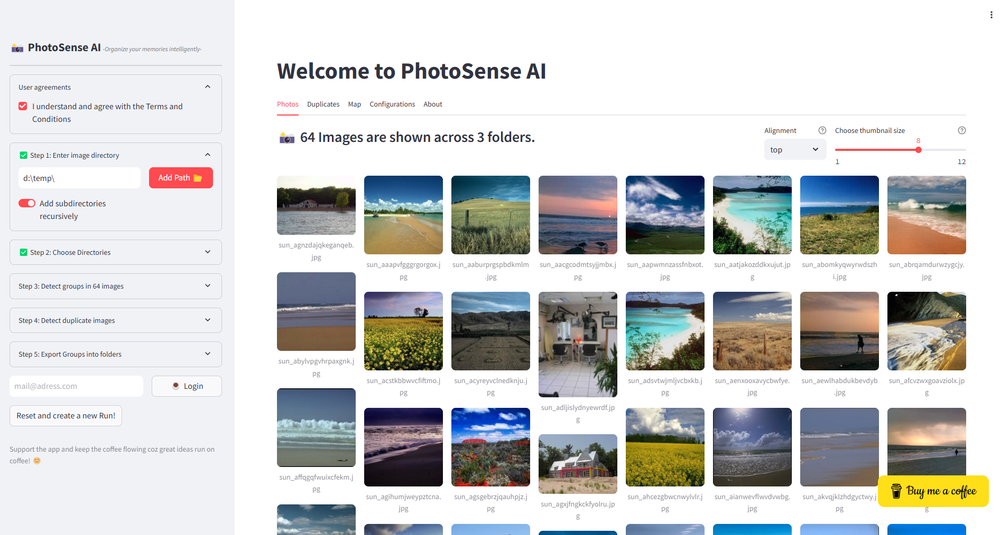
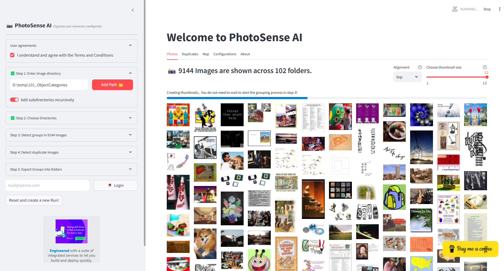
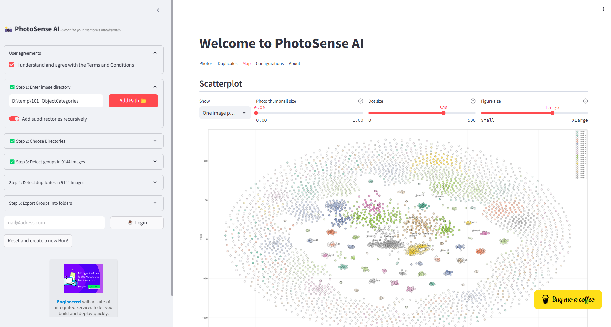

Examples
In this section we will use toy data sets for demonstration purposes.
A small data set containing three catagories is the Scenes [toy-example-data set](https://github.com/erdogant/erdogant.github.io/blob/master/datasets/scenes.zip?raw=true) This data set contains a few hundred images over 3 catagories which can use to cluster based on the picture content.
 |
A large data set is the [Caltech 101 objects data set](https://data.caltech.edu/records/mzrjq-6wc02/files/caltech-101.zip?download=1). The dataset contains 9.144 real-world images belonging to 101 categories. About 40 to 800 images per category. The size of each image is roughly 300 x 200 pixels and can be downloaded at the Caltech website. When we add the directory of the images to PhotoSense AI, All images in subdirectories will be recursively collected and processed.
Note
Read the blog [Step by step guide to clustering images](https://medium.com/towards-data-science/a-step-by-step-guide-for-clustering-images-4b45f9906128 for more details.
On my machine (32GB internal memory), this amount of images is clearly the limit of what can be analyzed. One way to keep on going it to lower the thumbnail resolution to 64 in the configurations to prevent out-of-memory issues. However, when doing so, the low resolution images will have negative impact on the accuracy of the clustering results. After waiting a couple of minutes, the thumbnails were loaded and could cluster on Picture Content in Step 3.
 |
 |